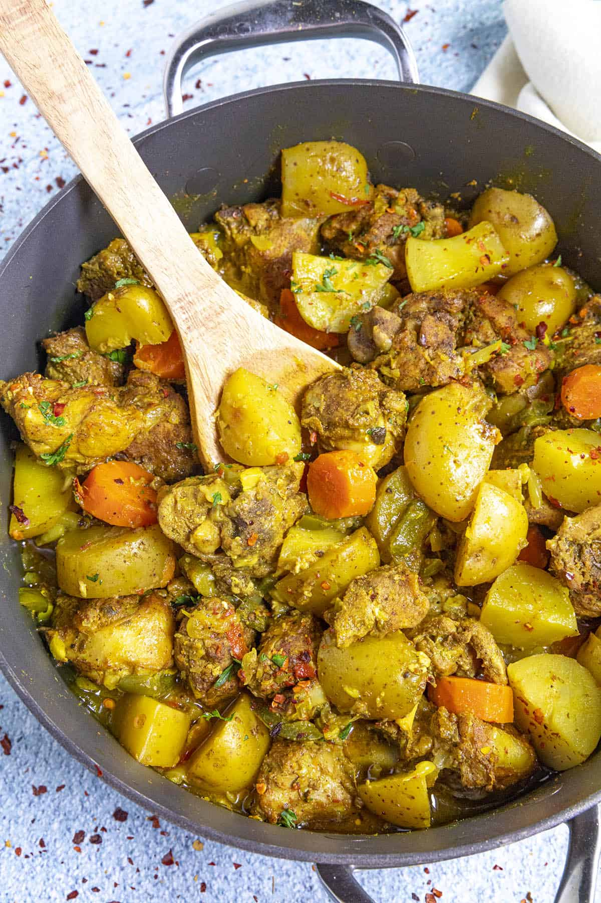

JAMAICAN CURRY CHICKEN

he easiest curry chicken recipe you’ll ever make! this recipe is a quick, easy and flavaful and perfect for people that live busy lives. we’ve kept the same authentic JAMAICAN 🇯🇲 FLAVOURS in a short amount of time. Under 30 minutes! give it a go!
Ingredients:
- 1kg Chicken Breast fillet
- 1tsp. Salt
- 1tsp. Black pepper
- 1tsp. Paprika
- 1tsp. Thyme
- 1tsp. Ginger
- 1tsp. turmeric
- 4 tsp. Curry powder
- 2tbsp. Vegetable oil
- 1 medium onion (chopped)
- 1/4 cup water
- 400ml coconut milk
- 5 sprigs Fresh thyme
- 150g baby potatoes
- 100g carrots (chopped)
- 1 whole scotch bonnet
Steps:
- Cut your Chicken breast into 2 inch cubes and place into a bowl.
- Season Chicken with salt, pepper, cumin, paprika, curry powder, ginger, thyme mix together and marinate overnight.
- Pour vegetable oil into a frying pan and place on high heat. Then add onions and garlic cloves and sortey for 3 minutes.
- Add More curry powder and turmeric and cook for 3 minutes and add 1/4 cup of water to the pan.
- Add chicken breast to the pan, mix and cook until brown for 10 minutes.
- Then pour coconut milk and stir, add fresh thyme and 1 scotch bonnet pepper and cook for 10 minutes
- Add baby potatoes and carrots, cook and simmer for further 10 minutes.
Serves 4-6
Try with: Rice and peas, Coconut rice, White rice.